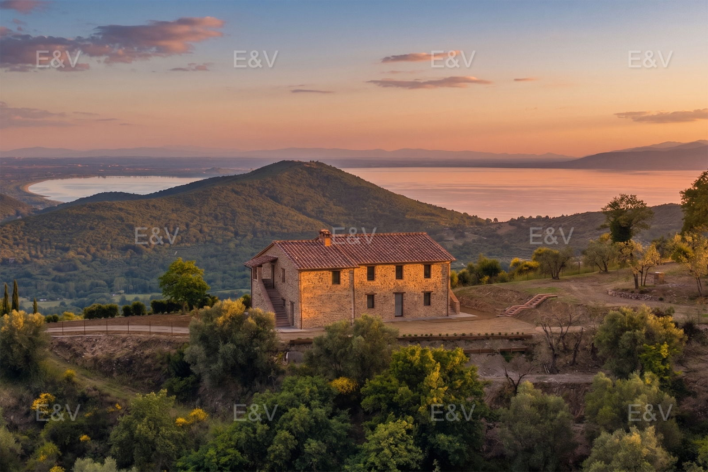

€1.200.000
Colle San Paolo / Panicale, Umbria
Open the listingOld mixed with new at the cap: newly built in stone with fireplace living, masonry kitchen, terrace wrap and wisteria pergola with outdoor fireplace connecting to a built private pool, on ~1.4 ha with 360° Lake Trasimeno views. Independent of panicale-suki and panicale-due-unita already on the board.
Opened 4 Sep 2026. salesPrice €1200000 (at cap). 5 bed / 6 bath / 370 m² / plot 14,000. hasSwimmingPool true, flooring STONE, energy A. Locality Colle San Paolo (Panicale).